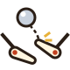
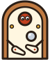
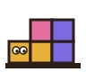
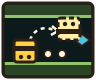

Pinball — l’illustration : « la bille entre deux batteurs »
Trois propositions, dans le trait des autres jeux : aplats, contour encre de 3 px, petits yeux pour ce qui est vivant, couleurs de la charte (encre, papier, terre cuite, moutarde, bronze pour le bois) et l’acier de la bille (#C9D2DE, celui de l’armure de Rush). Fichiers prêts à copier dans apps/pinball/public/illustration.svg : illustration-1-le-tir.svg, -2-la-bille.svg, -3-la-table.svg.

La bille vient de partir du batteur droit, levé ; trajet en pointillés, deux éclats moutarde au point de frappe. Le geste du jeu, lisible à 70 px.
À la taille du portail : cartouche du téléphone (70 px de haut) sur A, B et C ; cartouche de l’ordinateur (84 px) sur C.
La bille a des yeux (comme les bumpers du jeu et les pièces de Tower), sourcils relevés, regard vers le trou entre les deux batteurs : le moment où tout se joue.
À la taille du portail : cartouche du téléphone (70 px de haut) sur A, B et C ; cartouche de l’ordinateur (84 px) sur C.

Un petit meuble en arche, un bumper à yeux, la bille et les deux batteurs : la table entière, en plus petit. Le cadre se lit de loin, les batteurs moins.
À la taille du portail : cartouche du téléphone (70 px de haut) sur A, B et C ; cartouche de l’ordinateur (84 px) sur C.
 Tower
Tower Rush
Rush
Blocks
Gravity